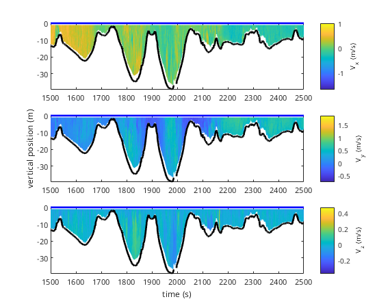
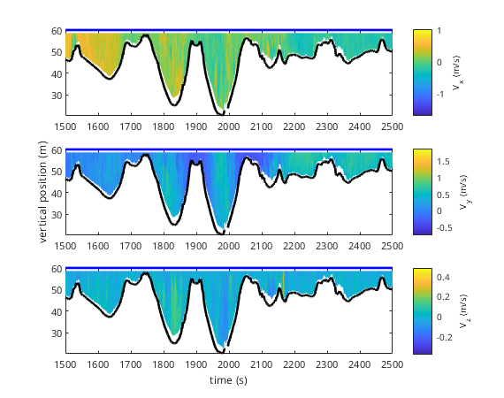

Vertical positioning
An important step when processing ADCP data is to properly set the vertical positioning of the data. For moored ADCP deployments the vertical position is usually set to a fixed level. For vessel mounted deployments the vertical position of the ADCP follows the water surface. This water surface might be (quasi) constant in a river, but might vary significantly in a tidally affected area.
Contents
Moored ADCP: fixed vertical position
Vessel mounted ADCP: constant water surface
If we first take a look at the velocity measured by the ADCP:
mmbend.plot_velocity set(gca,'xlim',[1500 2500]) % zooming in on portion of the data
We can see that by default the water surface is at 0 m elevation, and this position is constant during the entire measurement. These data were collected in a river with negligible elevation changes. The way the vertical position is determined, is defined in the vertical_position_provider property of the ADCP object.
mmbend.vertical_position_provider
ans =
Warning: depth_transducer property is set for removal. Use the depth_tranducer
property of the VMADCP object to set the depth of the transducer
Warning: water_level property is set for removal. Use the water_level_object
property of the ADCP object to set the water level
ADCPVerticalPositionFromWaterLevel with properties:
depth_transducer: 0
water_level: [1×1 ConstantWaterLevel]
The vertical position is provided by an ADCPVerticalPositionFromWaterLevel object. This object uses the water_level and depth_transducer properties of the ADCP object to compute the vertical position of the ADCP. We set the depth of the transducer to 0.4 m:
mmbend.depth_transducer = 0.4;
The water_level property of the ADCP object is controlled by the water_level_object property
mmbend.water_level_object
ans =
ConstantWaterLevel with properties:
level: 0
The ConstantWaterLevel object has the property level set to 0. This means the water level is at an elevation of 0 m. You may want to change this to have all position computations with respect to a given datum. Suppose the water level was at 60 m above sea level we can set:
mmbend.water_level_object.level = 60;
We will see the changes reflected in all position computations of the ADCP:
figure mmbend.plot_velocity; set(gca,'xlim',[1500 2500]) % zooming in on portion of the data